Environment Art — Sci-fi
Sci-fi Biotechnology Facility environment focusing on visual quality, lighting, shaders, gameplay readability and real-time performance.
Rogue Directive: Genesis is a sci-fi action game developed in Unity 6 as part of my final-year university project at the University of Gloucestershire, where it received the Best Group Project 2026 award. As one of the project's Environment Artists, I was responsible for the environment art and level design for Level 2: Orbital Breach and Level 3: The Vault, taking these environments from initial blockout through to the final playable experience.
"My aim throughout the project was to create environments that were not only visually engaging, but also functional spaces designed around the player's experience."
Cinematic renders.
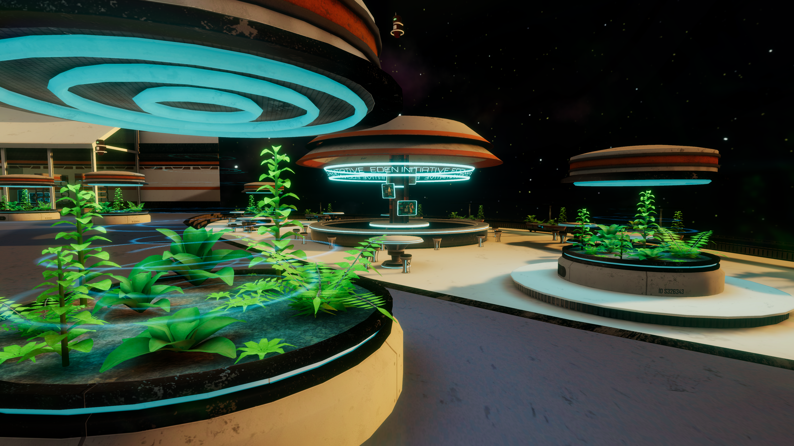
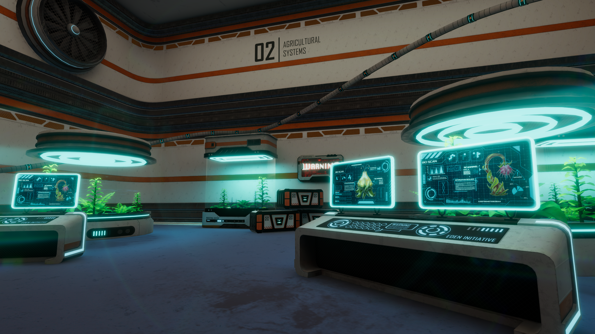
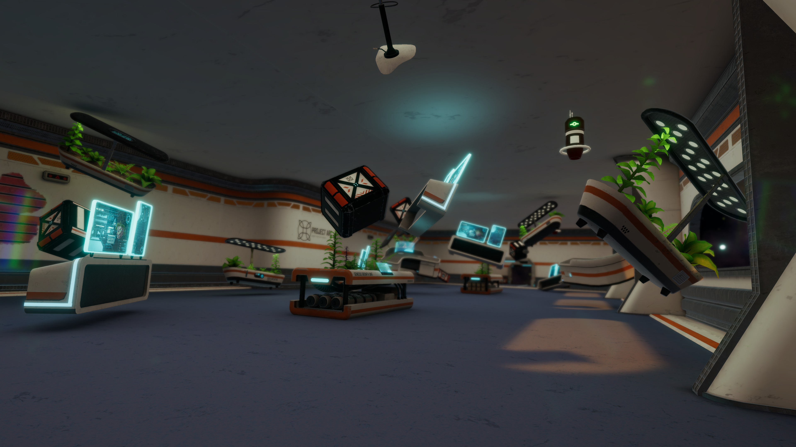
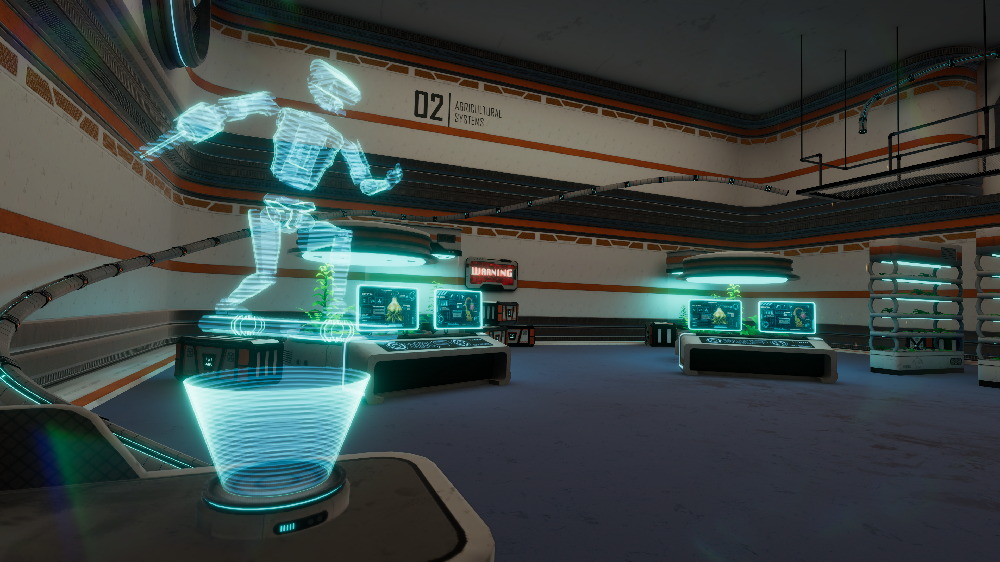
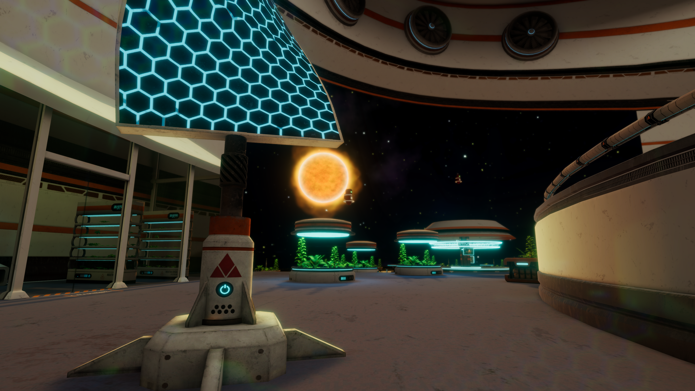
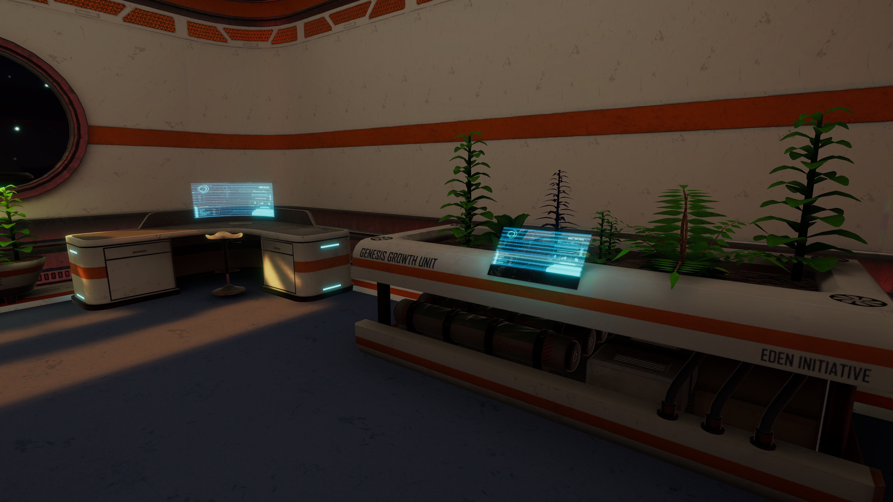
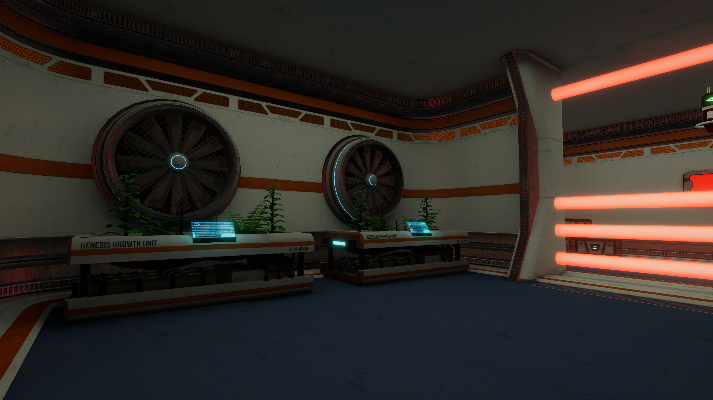
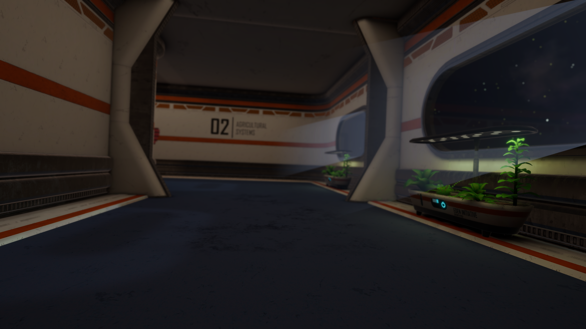
Shader experiments, lighting breakdowns and material notes.
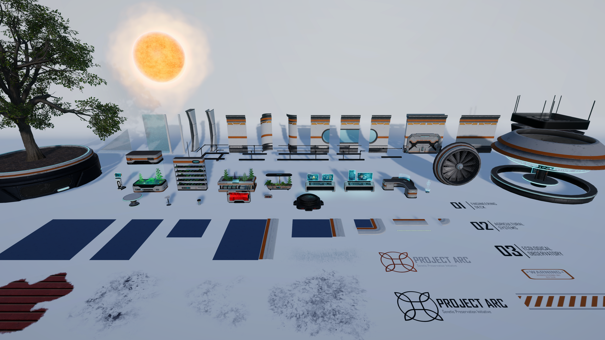
Overview of the modular asset kit used to construct the environments. Building around a consistent grid allowed assets to be reused across multiple spaces while maintaining visual consistency and reducing production time.
Bio Vegetation Vat designed as both an environmental storytelling piece and interactive gameplay prop, featuring a breakable glass.
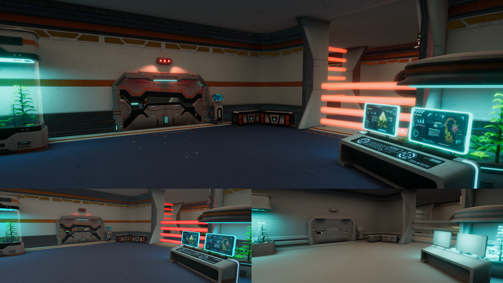
Top: final in-game render with baked lighting and post-processing. Bottom left: scene without post-processing. Bottom right: Unity's lighting debug view.
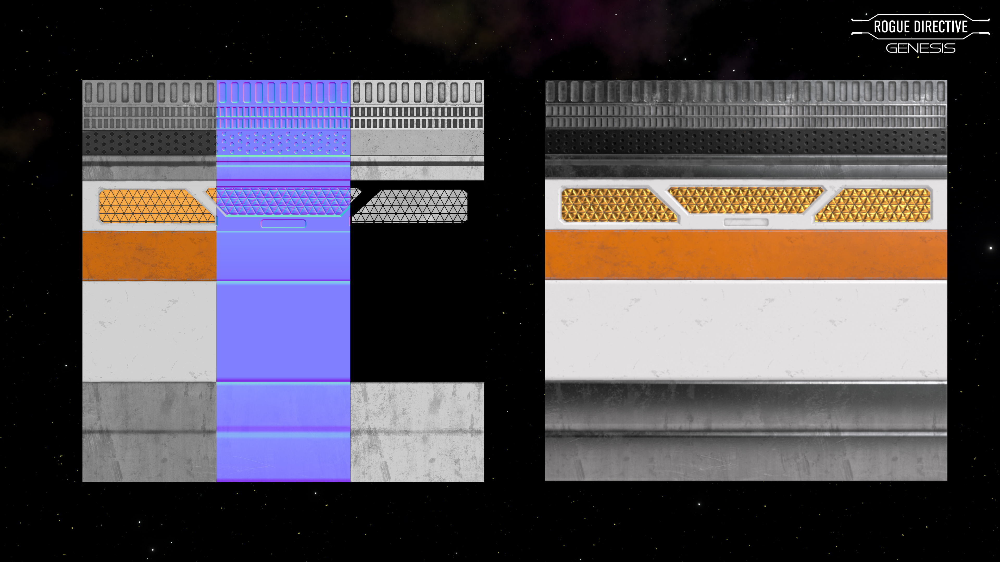
Structural assets were created using a shared trim sheet workflow to maintain consistent texel density, improve material reuse, and optimise texture memory.
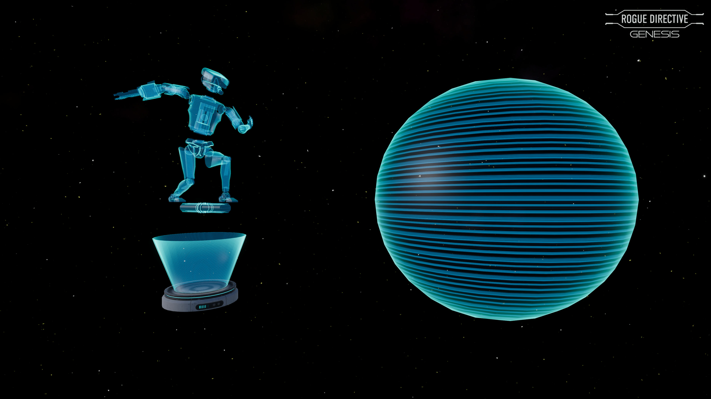
Custom Shader Graph hologram material featuring animated scan lines and a Fresnel effect to reinforce the futuristic aesthetic.
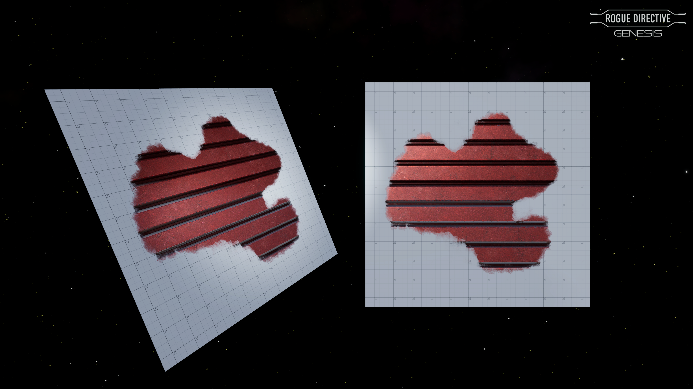
Custom decal shader using Parallax Occlusion Mapping to create the illusion of depth, adding surface detail while keeping wall geometry lightweight and maintaining real-time performance.